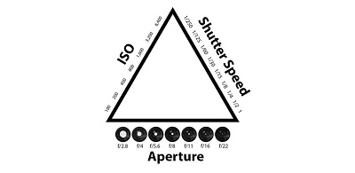
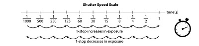
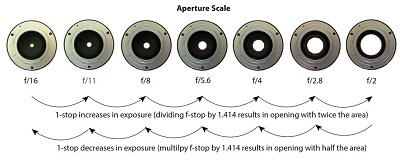
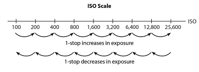
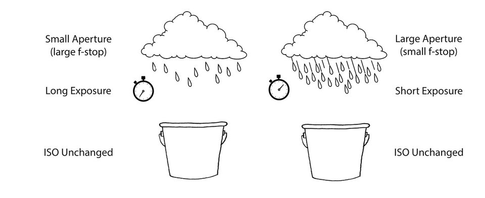
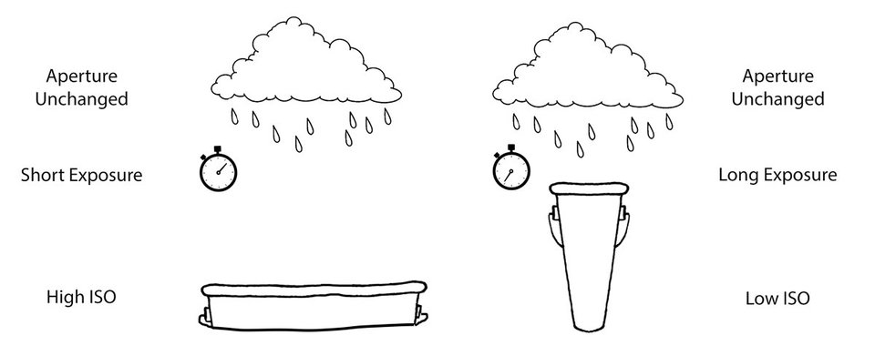
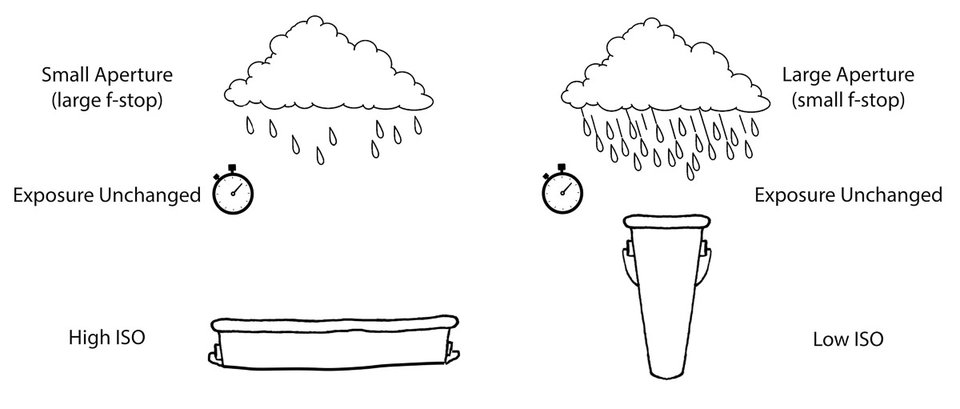

For many starting out in photography, the relationship between aperture, shutter speed, and ISO can be confusing. To further muddy the water, the terms ‘stop’ and ‘f-stop’ are often used interchangeably but refer to different things. In this article, I would like to take some of the mystery out of these concepts by talking about the exposure triangle and why it is important to understand for those who are starting out. Please keep in mind that the concepts in this article are oversimplified to make it easy for beginners to understand, especially when it comes to ISO.
Aperture, shutter speed, and ISO make up the three sides of the exposure triangle. They work together to gather the amount of light needed for a correctly exposed photograph. If one variable changes, at least one of the others must also change to maintain the correct exposure.

Before we go too far, let’s start our discussion by talking about a stop of light. Understanding what a stop is is key to understanding the exposure triangle. In photography, a stop refers to the doubling or halving of the amount of light that makes up an exposure. Each photo that we take requires a certain quantity of light to expose it correctly. Adding a stop of light by doubling the exposure will brighten an underexposed image. Conversely, decreasing an exposure by one stop (halving the amount of light) will darken an overexposed image.
So how do you add or take away a stop of light? To do this, we need to change the aperture, shutter speed, and/or ISO. Let us look at each of these individually.
Shutter speed is the length of time light is allowed to hit the sensor. It is measured in seconds. Shutter speed is probably the easiest of the exposure triangle sides to understand. To double the amount of light, we need to double the length of the exposure.

Aperture refers to the size of the circular hole in the lens that lets in light. The bigger the hole, the more light that reaches the sensor. In fact, each time you double the area of that opening, you double the amount of light or increase the exposure by one stop. On the other hand, if you half the area of the opening, you half the amount of light hitting the sensor. And you guessed it; that will decrease the exposure by one stop.
Now without getting too technical, an f-stop is a ratio that relates to the size of that opening. Mathematically it is equal to the focal length of the lens divided by the diameter of the lens. At first glance the values on the f-stop scale are confusing. The numbers don’t seem to make any sense. Why do small values correspond to larger openings and vice versa? For a simple explanation, keep reading.
To understand why large f-stop numbers refer to small openings and small f-stop numbers refer to large openings requires a bit of math. Don’t worry; I will try and keep it simple. If you take the ratio I mentioned above:
f-stop = focal length/diameter
and rearrange it for diameter, you get:
diameter = focal length/f-stop
What this means is that for any given focal length, we can calculate the diameter of the aperture by dividing the focal length by the f-stop value. But when you divide a given focal length by a large f-stop number, the result is a small diameter. Therefore, the area of the opening is small. Conversely, if you divide the same focal length by a small f-stop number, you get a large diameter. And a large diameter means a bigger area and more light passing through the opening.
Also, it turns out that to double the area of the opening, the f-stop needs to be divided by the square root of two (1.414). That is why the f-stops are not nice round numbers. To half the area, the f-stop needs to be multiplied by the square root of two.

If you are so inclined, prove this to yourself with a little geometry. Remember that the area of a circle is:
Area = (π/4)diameter2
Try calculating the area of the aperture for a lens with a 50mm focal length using different f-stop values. As you move up the f-stop scale, you should see the areas doubling.
The final variable in the exposure triangle is ISO. You can think of ISO as the sensitivity of the digital sensor (although it is a lot more complicated than that). Higher values of ISO mean that the sensor does not need to collect as much light to make a correct exposure. Low ISO values mean that the sensor will have to gather more light to make the exposure.
Here is the ISO scale. Like shutter speed, this scale is easy to understand. Doubling the ISO equates to a one stop increase in exposure. Halving the ISO leads to a reduction of the exposure by one stop.

For any photograph, there is only one mathematically correct exposure. However, there are hundreds of combinations of aperture, shutter speed and ISO that can be used to create that exposure. The combination we choose depends on what our artistic vision for that image is. For now, let’s just look at how the three variables in the exposure triangle work together. In my next article, I will talk about how to use aperture, shutter speed, and ISO artistically.
For any given exposure, if one of the three variables change, you must adjust one (or both) of the others in the opposite direction. For example, if you decided to decrease your shutter speed by two stops, you will need to increase your aperture or ISO by two stops. You could also change both aperture and ISO by one stop with the same effect.
As another example, say you increased your ISO by four stops. Then you would need an equivalent decrease of four stops in aperture or shutter speed (or a combination of the two).
So lets put it all together using an analogy. Instead of light, let’s talk rain. Specifically filling up buckets with rain water. The exposure will be the total amount of water collected. Let’s say our ‘exposure’ is one gallon.
In this analogy, ‘shutter speed’ is the length of time we leave the bucket outside in the rain to fill up. How hard it is raining is our ‘aperture.’ A downpour would be a wide open aperture (large opening, small f-stop number) while a light sprinkle would equate to a tiny aperture (small opening, large f-stop value).
Finally, the width of the bucket represents ‘ISO.’ Now, all our buckets have to measure one gallon to collect the correct ‘exposure.’ However, a very shallow, wide bucket (think very sensitive, high ISO) will fill up much faster than a tall, skinny bucket (low ISO).
There are many scenarios which will collect our one-gallon ‘exposure.’ To make things a bit easier, we will fix one variable, and let the other two change. Let’s start by fixing ISO. If we have two buckets that are the same shape, we could put one out in a downpour for a short length of time to collect one gallon. Or, we could put the other out for a long time during a light sprinkle to collect that same gallon of water. However, if we put the bucket out for a long time in a downpour, we would over expose our image. Water would be spilling out onto the ground! Conversely, putting the bucket out in a light sprinkle for a short length of time would not fill up the bucket. Our bucket would be under exposed.

Here is another scenario. This time lets assume that there is a steady rain. If we have a wide bucket, we won’t need to leave it out for long to collect a gallon of rain. However, if we put out a skinny, tall one-gallon bucket in the same rain, it will take much longer to fill the bucket up.

Lastly, let’s fix the time we leave the buckets outside. To collect one gallon of water we could put the wide, shallow bucket out in a light rain. Or, we could put the tall, skinny bucket out in a downpour for the same time to collect exactly one gallon of rain water.

As you can see, there are lots of combinations of ‘shutter speed,’ ‘aperture’ and ‘ISO’ that yield one gallon of ‘exposure.’ Is one combination better than another? Well, that depends on how you want your photograph to look. What is important is the understanding that if you increase or decrease one variable in the exposure triangle by a number of stops, you must make up for that by decreasing or increasing one of the others (or a combination of the others) by an equal number of stops.
A stop is the doubling or halving of the light that makes up an exposure. We can add or subtract stops by changing the aperture, shutter speed, or ISO. So the next time someone tells you that you need to increase your exposure by a couple of stops, you will hopefully know what they mean and how to do it.
ving from a shutter speed of 1⁄60 s to 1⁄30 s will add a stop of light because the shutter will remain open twice as long. Changing from a shutter speed of 1s to 1/8 s will decrease the exposure by three stops. Why? From 1s to 1⁄2 s is one stop. Then 1⁄2 s to 1⁄4 s is another stop. Finally, 1⁄4 s to 1⁄8 s is a further halving of the time the shutter remains open or the third stop.